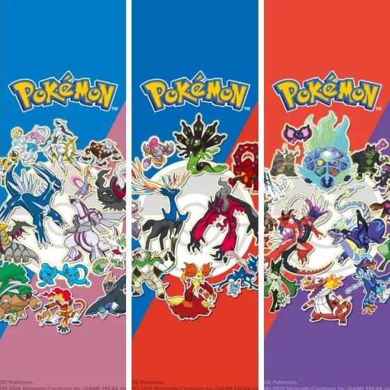
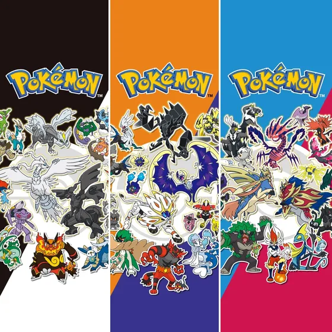

Wu Jacky
POKÉMON GO COLLECTION
🌐 選擇您的語言
Choose your language
🇹🇼 繁體中文
🇺🇸 English
🇯🇵 日本語
🇰🇷 한국어
🇻🇳 Tiếng Việt
🇹🇭 ไทย
🇮🇩 Bahasa Indonesia
🇪🇸 Español
🇧🇷 Português
官方 LINE ↗
首頁
商品目錄
背景圖鑑
世界地圖
⭐ 285+ 筆背景紀錄
色違與限定背景，
一次找齊
逛商品 →
官方 LINE ↗
⌄
商品目錄
色違、極巨化、限定背景，挑好加入清單
逛商品 →

背景圖鑑
歷年地點與特殊背景，9 種語言可查
查背景 →

世界地圖
按城市找活動與限定背景
看地圖 →
請開啟 JavaScript 以載入活動與 LINE 聯絡入口。
 商品目錄色違、極巨化、限定背景，挑好加入清單逛商品 →
商品目錄色違、極巨化、限定背景，挑好加入清單逛商品 →
商品目錄色違、極巨化、限定背景，挑好加入清單逛商品 →
商品目錄色違、極巨化、限定背景，挑好加入清單逛商品 →